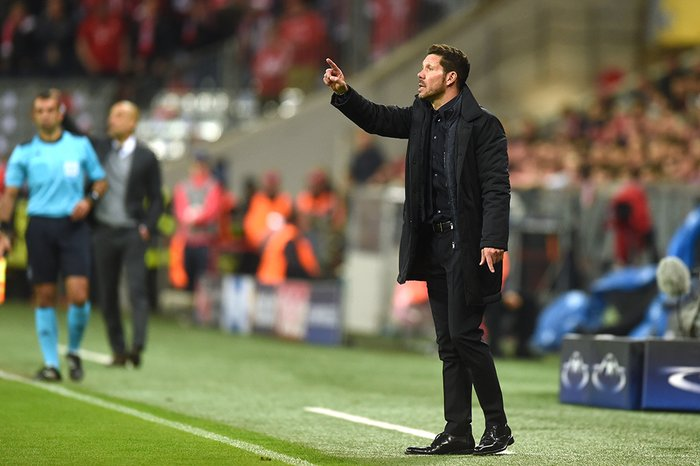
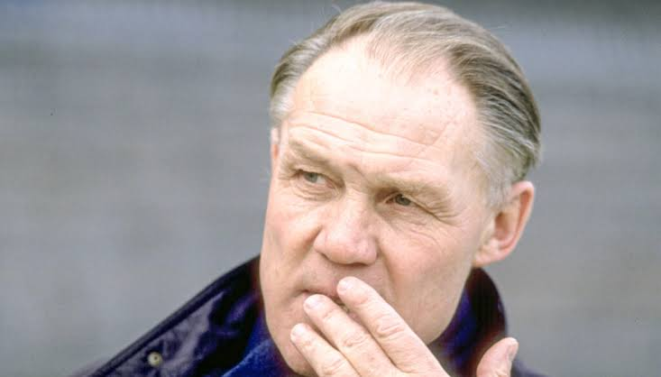
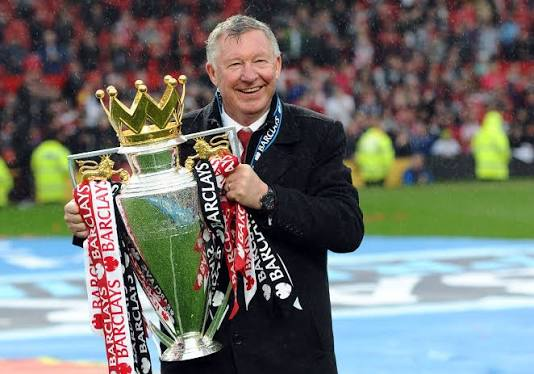
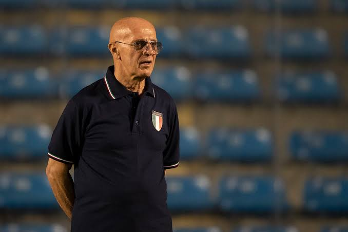
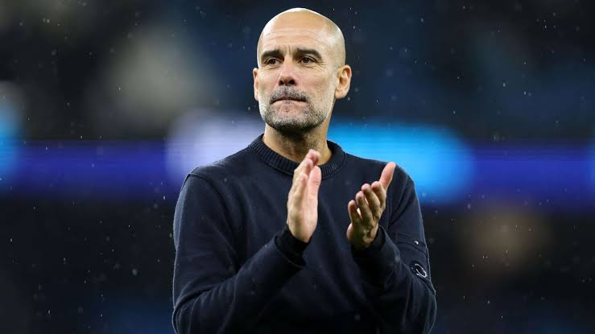

© 2026 Football Tactics -
Todos os direitos reservados.

Muito além de escalar os 11 titulares, o técnico é o grande estrategista por trás do espetáculo. É ele quem estuda as fragilidades do adversário, define a organização defensiva e ofensiva, treina padrões de movimentação e faz ajustes decisivos em tempo real durante a partida. Seu maior desafio é transformar talentos individuais em um coletivo organizado e vitorioso.Muito além de escalar os 11 titulares, o técnico é o grande estrategista por trás do espetáculo. É ele quem estuda as fragilidades do adversário, define a organização defensiva e ofensiva, treina padrões de movimentação e faz ajustes decisivos em tempo real durante a partida. Seu maior desafio é transformar talentos individuais em um coletivo organizado e vitorioso.
Ao longo da história, o futebol evoluiu graças a mentes visionárias que desafiaram o óbvio e mudaram a forma como o jogo é pensado. De sistemas clássicos como o WM e o Catenaccio até o Futebol Total e o jogo posicional moderno, alguns treinadores deixaram legados que transcenderam épocas e fronteiras. Conheça abaixo os comandantes que redefiniram conceitos, criaram escolas táticas e influenciaram gerações dentro e fora das quatro linhas.

Rinus Michels é amplamente considerado um dos maiores treinadores da história do futebol — e não à toa foi eleito pela FIFA como o Treinador do Século XX. O principal motivo para esse reconhecimento é a revolução tática que ele liderou nos anos 1970, criando e aperfeiçoando o conceito de Futebol Total. Sua filosofia quebrou a rigidez posicional da época: sob seu comando, qualquer jogador de linha deveria ser capaz de atacar, defender e ocupar os espaços deixados pelos companheiros com fluidez, aliado a uma marcação pressão intensa para recuperar a bola rapidamente. Essa ideia moldou o futebol moderno e influenciou diretamente gerações de treinadores, de Johan Cruyff a Pep Guardiola. Sua carreira vitoriosa se consolidou em clubes gigantes e na seleção de seu país: Ajax: Foi onde construiu a base do Futebol Total. Conquistou quatro títulos do Campeonato Holandês, três Copas da Holanda e a Copa dos Campeões da Europa (atual Champions League) de 1970–71, transformando o clube em uma potência continental. Barcelona: Levou sua filosofia à Espanha e encerrou um jejum de 14 anos do clube ao vencer o Campeonato Espanhol (La Liga) de 1973–74, contando com Johan Cruyff em campo, além de conquistar uma Copa do Rei. Seleção Holandesa: Comandou a lendária "Laranja Mecânica" na Copa do Mundo de 1974. Embora tenha ficado com o vice-campeonato, aquela equipe encantou o mundo e entrou para a história como uma das mais influentes de todos os tempos. Anos depois, em 1988, voltou à seleção para conquistar o primeiro e único grande título da história da Holanda: a Eurocopa de 1988 (com astros como Van Basten, Gullit e Rijkaard). Outros clubes: Também teve passagens relevantes pelo FC Köln (onde venceu a Copa da Alemanha em 1983), além de Los Angeles Aztecs e Bayer Leverkusen. Mais do que uma coleção de troféus expressivos, o legado de Rinus Michels está na mudança permanente de mentalidade que impôs ao esporte: provou que organização coletiva, versatilidade e intensidade ofensiva podiam caminhar juntas e dominar o futebol mundial.

Sir Alex Ferguson é amplamente considerado o maior treinador de clubes da história do futebol, não apenas pelo volume impressionante de troféus — foram 49 títulos oficiais ao longo da carreira —, mas por sua longevidade rara e capacidade de reconstruir equipes vencedoras ao longo de quase quatro décadas. Seu maior diferencial era a gestão humana aliada a uma mentalidade implacável. Ferguson conseguia extrair o máximo de elencos completamente diferentes ao longo dos anos, renovando gerações de jogadores sem nunca perder o padrão competitivo. Famoso por seu pulso firme (o temido "hairdryer treatment") e pelo espírito de luta até os acréscimos (os célebres "Fergie Time"), ele transformou a cultura vencedora em marca registrada por onde passou. Sua trajetória histórica se divide principalmente entre a Escócia e a Inglaterra: Início e o milagre no Aberdeen (Escócia): Após treinar East Stirlingshire e St. Mirren, assumiu o modesto Aberdeen em 1978 e quebrou a hegemonia histórica de Celtic e Rangers. Conquistou três Campeonatos Escoceses, quatro Copas da Escócia e alcançou o feito histórico de vencer a Recopa Europeia de 1982–83 (batendo o Real Madrid na final) e a Supercopa da UEFA. Ele continua sendo o último técnico a vencer o Campeonato Escocês fora da dupla de Glasgow. Seleção Escocesa: Teve uma breve passagem como interino entre 1985 e 1986, comandando o país na Copa do Mundo do México após a morte do técnico Jock Stein. A dinastia no Manchester United (1986–2013): Em quase 27 anos em Old Trafford, tirou o clube de um jejum de 26 anos sem títulos nacionais e o transformou na maior potência do futebol inglês. Conquistou 38 troféus pelos Red Devils, incluindo 13 títulos da Premier League, 2 UEFA Champions League (1998–99 e 2007–08), 5 Copas da Inglaterra (FA Cup) e 1 Mundial de Clubes. O auge veio na temporada 1998–99, quando alcançou a inédita Tríplice Coroa inglesa (Premier League, FA Cup e Champions League). Mais do que os números recordes, Sir Alex Ferguson é reverenciado por sua adaptabilidade tática e liderança absoluta. Ele atravessou diferentes eras do futebol moderno mantendo-se no topo até o dia de sua aposentadoria, deixando um padrão de excelência difícil de ser igualado

Arrigo Sacchi é um dos treinadores mais revolucionários da história do futebol. Mesmo sem ter sido jogador profissional — o que lhe rendeu a célebre frase "nunca percebi que para ser jóquei fosse preciso ter sido cavalo antes" —, ele mudou para sempre a forma como o jogo é organizado taticamente, provando que o sistema coletivo supera o talento individual isolado. Seu grande legado foi romper com o tradicional catenaccio italiano (baseado em marcação individual e líbero) para implementar uma marcação por zona agressiva, linhas extremamente compactas (com no máximo 25 metros entre a defesa e o ataque), linha de impedimento alta e pressão constante na saída de bola adversária. Essa proposta coletiva serviu de base direta para o futebol moderno praticado por técnicos como Carlo Ancelotti, Jürgen Klopp e Pep Guardiola. Sua carreira foi marcada por passagens curtas, porém de impacto profundo: Início e ascensão no Parma: Após treinar equipes menores como Cesena (base) e Rimini, ganhou destaque nacional ao comandar o Parma entre 1985 e 1987. Além de levar o clube à Série B, eliminou o poderoso Milan de Silvio Berlusconi duas vezes na Copa da Itália, o que convenceu o dirigente a contratá-lo. O lendário Milan (1987–1991): É considerado o maior time de clubes da história por muitos analistas. Com uma base sólida de defensores italianos (Maldini, Baresi, Costacurta, Tassotti) e o trio holandês (Van Basten, Gullit e Rijkaard), Sacchi conquistou 8 títulos em quatro anos: 1 Campeonato Italiano (1987–88), 2 Copas dos Campeões da Europa / Champions League consecutivas (1988–89 e 1989–90), 2 Mundiais Interclubes, 2 Supercopas da UEFA e 1 Supercopa da Itália. Seleção Italiana: Comandou a Azzurra entre 1991 e 1996, levando a equipe à final da Copa do Mundo de 1994, nos Estados Unidos, onde acabou derrotada pelo Brasil apenas na disputa por pênaltis. Reta final: Teve ainda uma segunda e breve passagem pelo Milan (1996–97), além de comandar o Atlético de Madrid (1998–99) e retornar rapidamente ao Parma em 2001, antes de encerrar a carreira à beira do campo por questões de estresse e saúde. Mais do que pela quantidade de troféus, Arrigo Sacchi está no panteão dos maiores da história pela influência conceitual: ele provou que era possível jogar um futebol ofensivo, intenso e dominante na Itália, reescrevendo os manuais táticos do esporte mundial.

Pep Guardiola é amplamente considerado um dos maiores e mais influentes treinadores da história do futebol — para muitos, o maior estrategista do século XXI. Ao longo de uma trajetória marcada por mais de 40 títulos oficiais, ele não apenas empilhou troféus nas três principais ligas da Europa, mas redefiniu a maneira como o futebol é pensado e jogado. Herdeiro direto das ideias de Johan Cruyff, Guardiola levou o jogo de posição a um nível inédito de precisão. Suas equipes ficaram famosas pelo domínio absoluto da posse de bola, saída de jogo construída desde o goleiro, pressão sufocante pós-perda (a regra dos segundos para recuperar a bola) e inovações táticas constantes — como o uso de laterais invertidos por dentro, o "falso 9" com Lionel Messi e zagueiros atuando como meio-campistas na construção. Sua carreira vitoriosa é marcada por três eras históricas antes de sua pausa sabática em 2026: FC Barcelona (2008–2012): Após iniciar no Barcelona B, assumiu o time principal e construiu uma das equipes mais brilhantes de todos os tempos. Conquistou 14 títulos em quatro anos, incluindo 3 Campeonatos Espanhóis (La Liga), 2 UEFA Champions League (2008–09 e 2010–11), 2 Copas do Rei e 2 Mundiais de Clubes. Em 2009, tornou-se o primeiro técnico a conquistar o inédito "Sextete" (vencendo todas as seis competições disputadas no ano). Bayern de Munique (2013–2016): Na Alemanha, transformou o jogo posicional da equipe bávara e estabeleceu domínio nacional absoluto. Conquistou 7 troféus, incluindo 3 títulos consecutivos da Bundesliga, 2 Copas da Alemanha, 1 Supercopa da UEFA e 1 Mundial de Clubes. Manchester City (2016–2026): Em uma década histórica na Inglaterra, transformou o clube em uma dinastia sem precedentes no futebol inglês, somando 20 títulos. Venceu 6 títulos da Premier League (sendo o primeiro treinador a conquistar o tetracampeonato inglês consecutivo, entre 2020–21 e 2023–24, além de atingir o recorde de 100 pontos em 2017–18), 1 UEFA Champions League (2022–23, coroando a Tríplice Coroa inglesa), 3 Copas da Inglaterra (FA Cup), 5 Copas da Liga Inglesa, 3 Supercopas da Inglaterra, 1 Supercopa da UEFA e 1 Mundial de Clubes. Além da sala de troféus impressionante, o grande legado de Pep Guardiola está em sua influência cultural e tática: sua obsessão pelos detalhes obrigou adversários, ligas inteiras e uma nova geração de treinadores ao redor do mundo a evoluírem para tentar acompanhá-lo.
© 2026 Football Tactics -
Todos os direitos reservados.